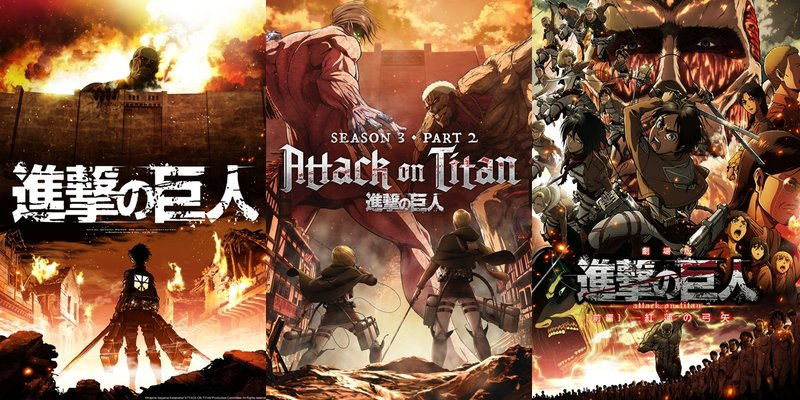

introduction

Attack on Titan (Shingeki no Kyojin) is a critically acclaimed Japanese manga and anime series created by
Hajime Isayama. First serialized in 2009, it quickly gained a global fanbase thanks to its intense
storytelling, unique characters, and complex themes. The story is set in a dystopian world where humanity
lives within massive, walled cities to protect themselves from the Titans, giant humanoid creatures that
devour humans without reason. These Titans represent a terrifying and ever-present threat, driving much of
the story's tension.
The protagonist, Eren Yeager, along with his friends Mikasa Ackerman and Armin Arlert, join the military to
fight these Titans after witnessing the destruction of their hometown by a colossal Titan. As they delve
deeper into the mysteries surrounding the Titans, they uncover shocking truths about the world, their
enemies, and even themselves. The narrative weaves together elements of survival, war, freedom, and
sacrifice, constantly challenging its characters with moral dilemmas.
One of the reasons for Attack on Titan's widespread appeal is its rich world-building. The series explores
themes of oppression, rebellion, and the cyclical nature of violence, with constant plot twists and
revelations that keep the audience on edge. Its animation, particularly in the battle scenes between humans
and Titans, is highly praised for its fluidity and intensity.
As the series progresses, Attack on Titan evolves from a straightforward battle for survival into a deeper
exploration of human nature, politics, and the cost of freedom. It raises questions about the value of life,
the ethics of war, and what it means to fight for one's beliefs. Attack on Titan remains one of the most
influential anime of its generation, leaving a lasting impact on pop culture.
The titans

In Attack on Titan, Titans are giant humanoid creatures that are central to the story’s conflict. These
terrifying beings range in height from 3 to over 15 meters, with the Colossal Titan towering above them all.
They are seemingly mindless and exist only to consume humans, though they do not need to eat for sustenance.
Titans are incredibly resilient, with only a weak point at the nape of their neck, which must be struck to
kill them.
Origins of the Titans:
Early in the series, Titans are portrayed as mysterious and fearsome enemies of humanity, but their true
nature is gradually revealed. Titans were once humans, transformed by the power of the Titan serum. This
serum, created from the spinal fluid of Titans, grants the ability to become a Titan when injected. Most
Titans are mindless and are referred to as Pure Titans, but some humans, known as Titan Shifters, can
control their transformations.
Titan Shifters:
Titan Shifters are humans who possess the ability to transform into a Titan at will. There are nine special
Titans, each with unique powers, such as the Attack Titan, Colossal Titan, Armored Titan, and Female Titan.
These powers are passed down through bloodlines or by eating another Titan Shifter, making them a coveted
asset in the world’s political and military conflicts.
Purpose and History:
It’s revealed that Titans were created as weapons in a centuries-old conflict between two nations: Marley
and Eldia. The Eldians, who are descendants of Ymir Fritz, the first Titan, have the ability to transform
into Titans. Marley uses Titans as weapons of war and to control the Eldian people, forcing them into
subjugation.
The existence of the Titans raises profound ethical questions about humanity, war, and the abuse of power,
making them a deeply integral element in Attack on Titan’s narrative.
The story of the anime

Attack on Titan is set in a world where humanity is on the brink of extinction due to giant humanoid
creatures known as Titans. The remnants of humanity live within three massive walls—Maria, Rose, and
Sina—which protect them from these terrifying beings. The story begins when a Colossal Titan breaches Wall
Maria, leading to the destruction of the outermost city and a massive loss of life.
The plot follows Eren Yeager, his adoptive sister Mikasa Ackerman, and their friend Armin Arlert, who
witness the tragedy of the Titan attack firsthand. Traumatized by the death of Eren’s mother, the three join
the military to fight back against the Titans. Eren vows to destroy every Titan, but soon after joining the
military, he discovers he has the ability to transform into a Titan himself.
As the story progresses, the group uncovers shocking revelations about the origins of the Titans and the
history of their world. The truth about the Titans, the walls, and the people who live beyond them unravels
layer by layer. It’s revealed that the Titans are humans transformed through the use of a mysterious power,
and the walls are built by Titans themselves.
The conflict shifts from a straightforward battle between humans and Titans to a more complex political
struggle. Eren and his comrades discover that they are part of a much larger world filled with warring
nations and centuries of oppression. The Eldians, Eren’s people, are seen as both oppressors and victims,
trapped in a cycle of violence.
In the end, the fight becomes not only about survival, but also about freedom, identity, and breaking the
chains of the past. The plot continually challenges the characters with tough moral choices, all leading to
an explosive and thought-provoking conclusion.